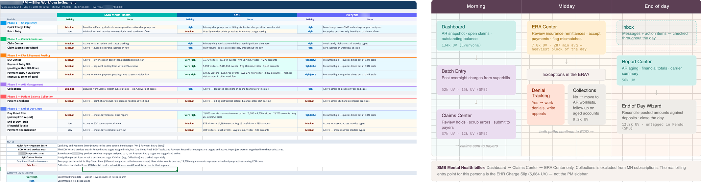
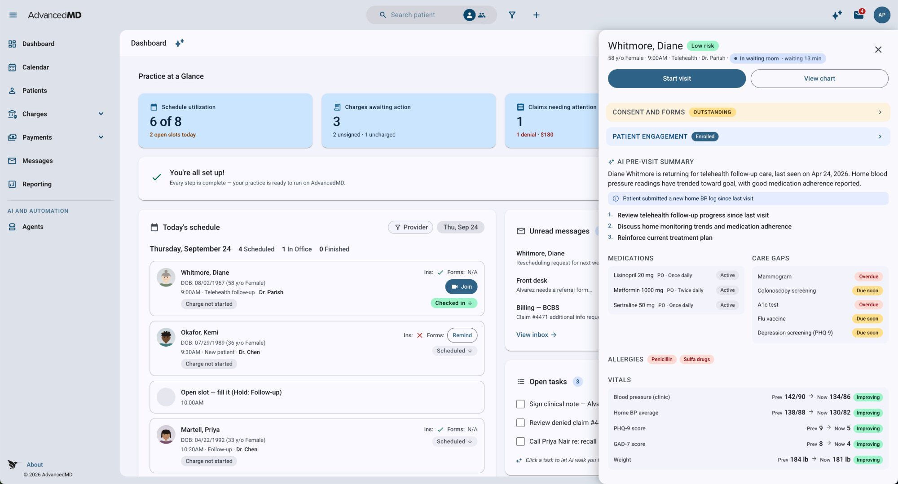
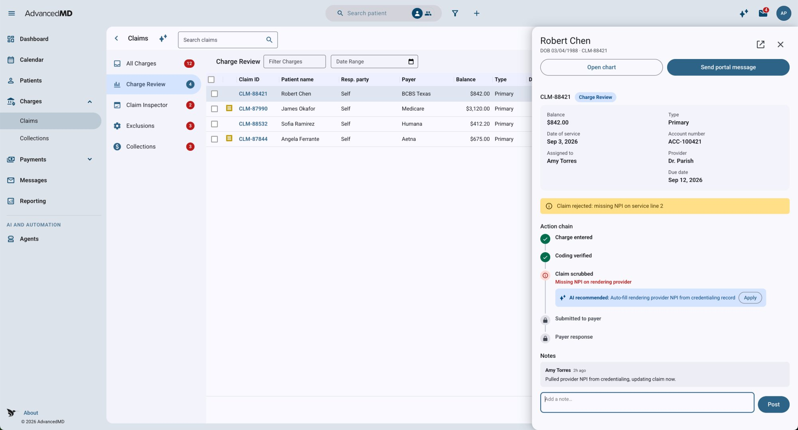

- My role
- Helped lead the UX architecture: workflow research, navigation, interaction patterns, and the component foundation underneath it.
- Worked with
- Product and engineering partners, with client practices through discovery sessions.
- Constraints
- Built on the existing codebase, not a ground-up rewrite. Older screens keep their current interfaces until they’re modernized.
- Status
- The base shell and top navigation have shipped. Unified workflows, patient context, and role-based starting points are still being built.
The two sides of the platform were closely related, but they didn’t always behave like one product. Staff moved between clinical and administrative workflows, often having to know which application owned the information or task they needed.
I helped lead the UX architecture for a new experience intended to make AdvancedMD easier for smaller practices to use without rebuilding the underlying platform.
01 — Approach
Why we needed a different approach
Small-practice retention was a concern, including practices that left before they were fully up and running.
An earlier approach to simplification focused largely on limiting which features were available. But reducing the number of features wouldn’t necessarily address the complexity of using the ones that remained.
We needed to understand how people worked across the platform before deciding how to reorganize it.
Rather than starting with a new navigation menu, I started with the workflows.
02 — Research
Understanding how practices actually work
I mapped how different roles moved through their day, from scheduling and clinical documentation to charge entry, claims, payment posting, and reporting.
I compared what we heard in client discovery with existing customer requests, product documentation, and Pendo usage data where it helped explain behavior.
The research showed that users didn’t necessarily experience PM and EHR as separate products. They experienced the interruptions created when work crossed between them.
A task might start in the scheduler, require information from the patient record, and continue in billing. The software’s boundaries didn’t always match the way the practice worked.
I also looked more closely at how different roles used the platform.
Front-desk staff often treated the scheduler as their starting point. Billers moved through a sequence of transaction review, coding, claims, and payments. Providers needed clinical information and patient context close to their daily schedule.
Those differences mattered when deciding what should appear in navigation, what belonged in a dashboard, and what should be available within the current task.

03 — Design
Designing around the work
The goal wasn’t to place existing PM and EHR screens inside a new frame and call it unified.
We wanted people to move through related tasks without constantly thinking about which part of the product they were using.
That led to several decisions about the experience.
Navigation should follow the way people work rather than the historical organization of the software. A front-desk user and a biller may need different starting points, but they shouldn’t have to learn separate products.
Patient information should remain available as people move between related tasks, rather than requiring them to repeatedly search for the same patient.
And information such as eligibility, balances, and messages should appear where it’s useful, instead of forcing users to visit another part of the platform to find it.


These decisions formed the experience architecture and gave the teams a common direction as individual workflows moved into development.
04 — Platform
Working with the platform we already had
AdvancedMD is a large, established product. Rebuilding its underlying systems wasn’t a practical option, and creating a separate simplified product would have introduced another experience to maintain.
The new experience was designed to run on the same codebase as the existing platform.
A new shell, navigation, and client-level configuration make it possible to introduce the experience incrementally while continuing to use existing capabilities underneath it.
That also means features developed elsewhere in AdvancedMD can become available within the new experience without maintaining a separate version of the product.
There are tradeoffs. Some existing screens will retain their older interfaces until they’re modernized. But the architecture gives us a way to improve the experience in stages instead of waiting for a complete rewrite.
05 — Design System
Modernizing the design system along the way
The platform’s component library had become another obstacle.
Years of customization to Angular Material had made upgrades increasingly difficult, eventually blocking progress beyond Angular 18.
We considered continuing to upgrade the customized library, replacing it with another component system, or moving back toward standard Angular Material 3.
We chose the third direction, keeping customization for components the product genuinely needs.
My work focused on defining how components should be used, documenting interaction patterns, and supporting shared resources for Design and Engineering. That included the Figma library and structured component guidance that could also be used in AI-assisted development.
The goal was to stop recreating the same design decisions across teams while avoiding another heavily customized system we’d struggle to maintain later.

The new experience became one of the first major places to put that direction into practice.
06 — Status
Where things stand
The new experience is still being developed.
The base shell and top navigation have shipped as the first pieces of the new infrastructure. The broader unified workflows, patient context, and role-based starting points are still being built.
The work so far has established the workflow architecture, navigation direction, interaction patterns, and component foundation for the new experience.
We haven’t yet validated whether the new experience improves small-practice retention or makes the overall workflow easier. Those are the outcomes the broader release will need to demonstrate.
For me, the important part of this project has been finding a way to improve a complicated, established product without pretending we could start over.
We can keep the capabilities practices depend on while gradually changing how people experience them. And each piece we modernize can contribute to the larger platform rather than becoming another isolated redesign.